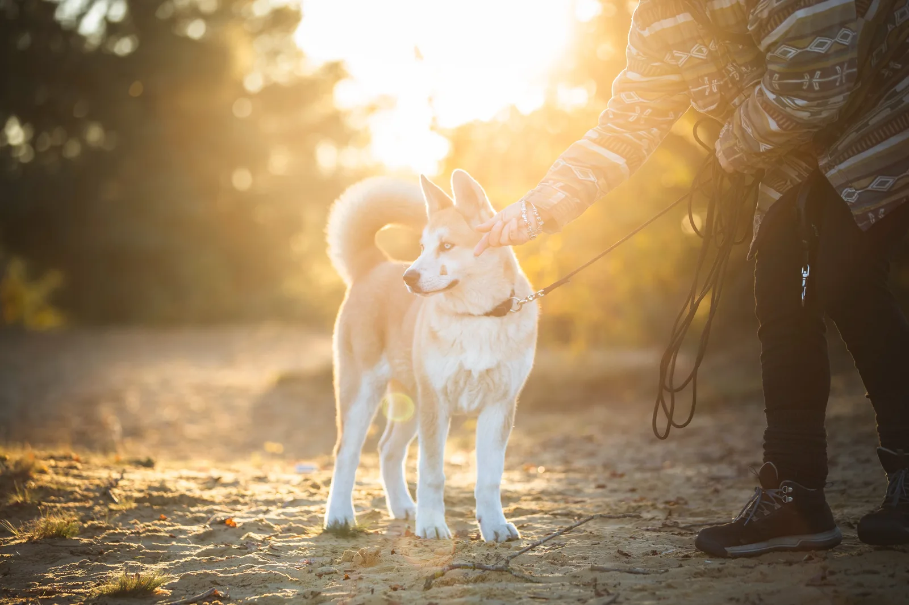

Bij jullie thuis
Gedragsconsult aan huis
Ik kom kijken waar het gedrag gebeurt: in jullie straat, jullie living, op jullie vaste wandeling. Samen zoeken we waarom het gebeurt en wat het in stand houdt.
- Duur
- Ongeveer 2 uur
- Daarna
- Een plan op maat van jullie hond
- Nazorg
- 2 weken, zodat je er niet alleen voor staat
€ 180per consult
Vraag je consult aan